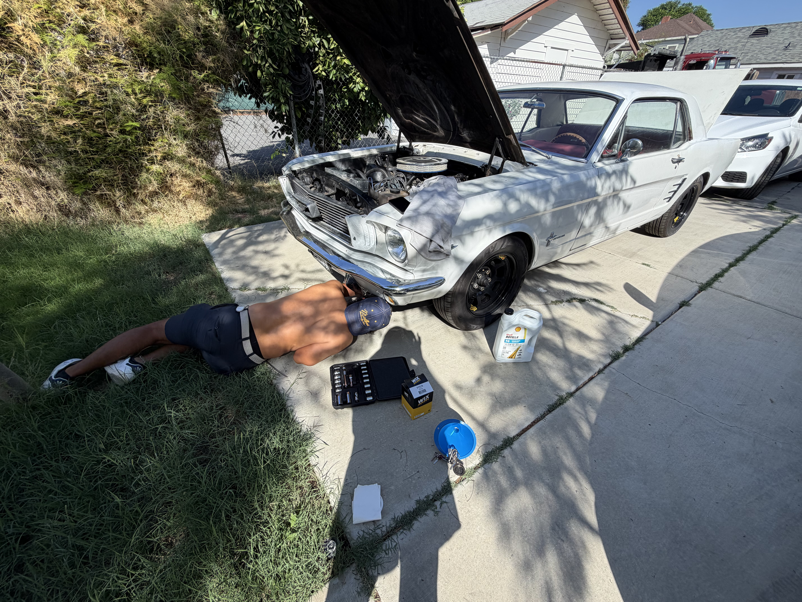
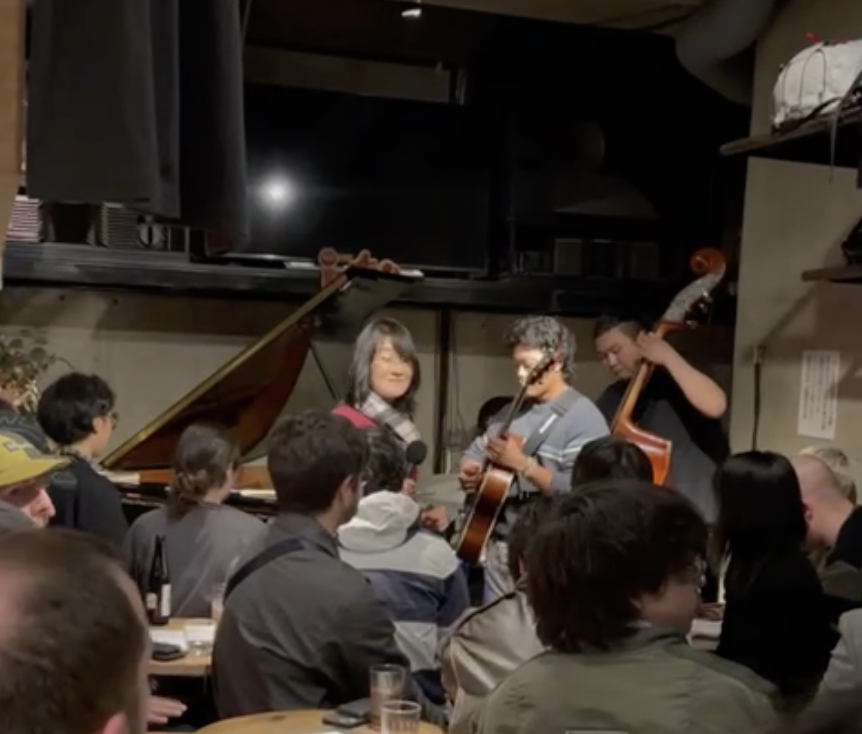
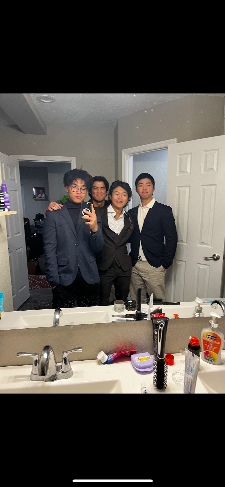

My name is Yuta Kida, and I am originally from Tokyo, Japan. I am currently a Division I student-athlete at the University of California, Riverside, where I compete as a member of the men's golf team while pursuing my undergraduate education. My journey from Japan to the United States has been shaped by my passion for golf, my desire to challenge myself, and my willingness to step outside my comfort zone. Having lived in Tokyo, Florida, and now California, I have experienced different cultures, environments, and ways of life that have helped shape who I am today, both as an athlete and as an individual.
I was born and raised in Tokyo, where I developed my passion for golf at a young age. What initially began as a hobby gradually became a significant part of my life. As I grew older, I became increasingly interested in competitive golf and the opportunities it could provide. I eventually made the decision to leave Japan and move to Florida to pursue my academic and athletic goals. Moving to another country at a young age was a major turning point in my life. It required me to become more independent, adapt to a different culture, and learn how to manage the responsibilities of living away from home.
During my time in Florida, I attended Montverde Academy and trained at the International Junior Golf Academy (IJGA), where I was surrounded by talented junior golfers from around the world. This environment allowed me to develop my skills while gaining valuable experience competing in tournaments throughout the United States. I participated in various junior golf events, including tournaments organized by the International Junior Golf Tour (IJGT), where I achieved multiple victories. These experiences taught me the importance of preparation, consistency, and mental resilience. Golf is an individual sport, and I quickly learned that success depends not only on physical ability but also on discipline, patience, and the ability to perform under pressure.
One of the most valuable lessons I learned through competitive golf is how to handle setbacks. Unlike many team sports, golf requires athletes to take full responsibility for their performance. There are days when countless hours of preparation lead to disappointing results, and learning how to respond to those moments has been an important part of my development. Through competition, I have learned to remain focused on long-term improvement rather than allowing individual performances to define my progress. I believe this mindset applies beyond athletics and will continue to benefit me throughout my academic and professional career.
After completing high school in Florida, I moved across the country to California to begin the next chapter of my life at UC Riverside. Becoming an NCAA Division I golfer represents one of the most significant milestones in my athletic career. Competing at the collegiate level comes with greater expectations and responsibilities, particularly when balancing academics, training, travel, and competition. As a student-athlete, I am constantly working to improve my time management, communication, and organizational skills. Being part of a collegiate athletic program has also taught me the value of teamwork, accountability, and representing something larger than myself.
Beyond golf, I have a strong interest in personal development, meeting people from different backgrounds, and exploring new opportunities. Having lived in three very different places, I have developed an appreciation for cultural diversity and the importance of understanding different perspectives. My international background has helped me become adaptable and open-minded, qualities I consider essential in today's increasingly interconnected world. I also enjoy learning about subjects outside my athletic career and finding ways to apply the discipline I have developed through sports to other areas of my life.
Looking toward the future, my goal is to continue growing academically, athletically, and professionally. While golf remains a central part of my life, I recognize the importance of building a strong foundation for opportunities beyond competitive athletics. I hope to use my experiences as an international student-athlete to develop meaningful connections, take on new challenges, and pursue a career that allows me to continue learning and improving.
Ultimately, my journey from Tokyo to Florida and now California has been about much more than golf. It has been a process of discovering my strengths, overcoming challenges, and becoming more independent. I am proud of the opportunities I have earned so far, but I also recognize that I am still at the beginning of my journey. I look forward to continuing to challenge myself, both on and off the golf course, and making the most of the opportunities ahead.
• Taught English to local Japanese children
• Child care
• Lead a group of children to classes and activities during school hours
• Gigs at multiple venues with professional musicians
• Made connections in the music industry
• Act as liaison between peers and house parents in academy
• Exhibit leadership through setting examples, give warning to those disobeying rules, and provide mentorship
• Organize events for students to participate in within the academy
• Manage chore lists and student behavior according to rule book


